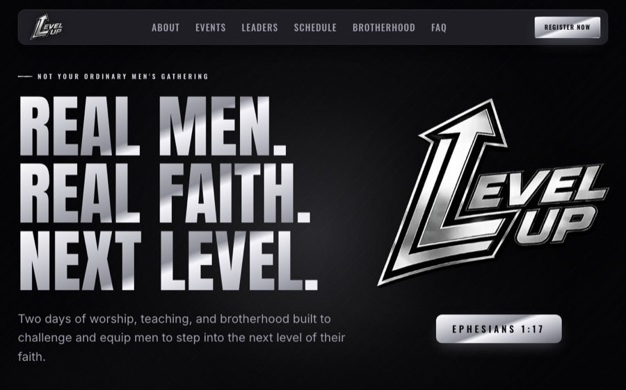
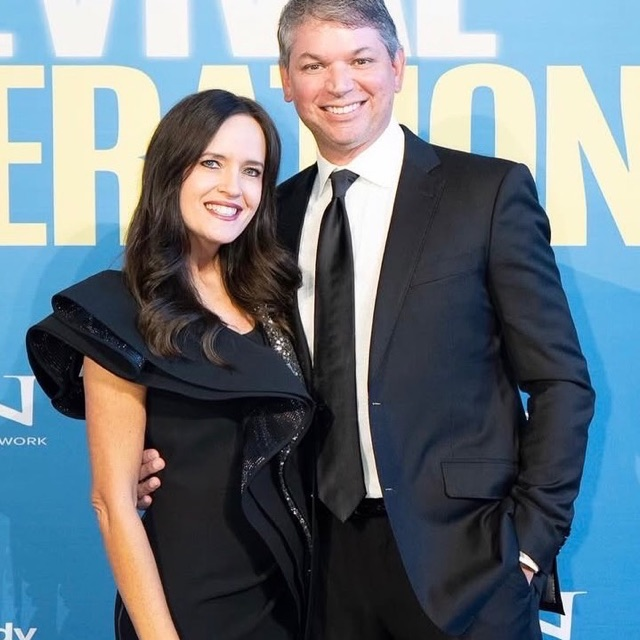

About
Hey, I'm Caden! At WhittWorks Studios we do it all. From speedy web design to consulting and more, we've got you covered.
When I am not building websites I am traveling the world, hosting a plethora of different events, or diving into new experiences. I am studying Economics at Troy University, and I'd love to help with anything you need in the business or tech world!
Services
-
Custom Website Design & Development
Design and front-to-back build of a site that fits how your organization actually works, from the first wireframe to launch day.
-
Site Management & Hosting Setup
Domains, hosting, and deployment set up properly, plus ongoing updates so the site stays live and current after launch.
-
Business & Technology Consulting
Working through the decisions behind the build: tooling, workflow, and where technology is worth the investment.
Featured Work

More work available on request.

“Quick turnaround, great design, and excellent support. He built exactly what I envisioned and was helpful from start to finish.”
Contact
Have something you want built?
Reach out for design and consulting availability.